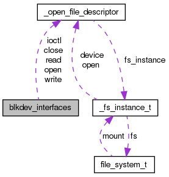

TacOS
0.1
Page principale
Structures de données
Fichiers
Structures de données
Champs de donnée
Tout
Structures de données
Fichiers
Fonctions
Variables
Définitions de type
Énumérations
Macros
Champs de données
Référence de la structure blkdev_interfaces
Graphe de collaboration de blkdev_interfaces:

[
légende
]
Champs de données
blkdev_read_t
read
blkdev_write_t
write
blkdev_ioctl_t
ioctl
blkdev_open_t
open
blkdev_close_t
close
void *
custom_data
La documentation de cette structure a été générée à partir du fichier suivant :
kernel/include/fs/
devfs.h
Généré le Mercredi Mai 8 2013 09:38:43 pour TacOS par
1.8.1.2
 1.8.1.2
1.8.1.2